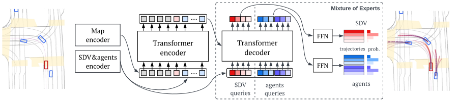

Multimodal prediction¶
Our paper Safe Real-World Autonomous Driving by Learning to Predict and Plan with a Mixture of Experts has been accepted at the NeurIPS 2022 workshop on Machine Learning for Autonomous Driving (ML4AD).
We also have a dedicated webpage , check that out for the on-road test video.
In this notebook you will train and evaluate the prediction part of SafePathNet.
Before starting, please download the Woven Planet Prediction Dataset 2020 and follow the instructions to correctly organise it.
SafePathNet Model¶
From the paper:
`
The architecture of SafePathNet is similar to those of VectorNet [11] and DETR [7], combining an element-wise point encoder [23] and a Transformer [31]. The element-wise point encoder consists of two PointNet-like modules that are used to compress each input element from a set of points to a single feature vector of the same size. A series of Transformer Encoder layers are used to model the relationships between all input elements (SDV, road agents, static and dynamic map, route), encoded by the point encoder. Then, a series of Transformer Decoders are used to query agents features. We make use of a set of learnable embeddings to construct the queries of the Transformer Decoders. M learnable query embeddings are used to obtain a variable number of M different queries for each road agent. An agent-specific MLP decoder converts each agent feature to a future trajectory. In addition to trajectories, the decoder predicts a logit for each agent trajectory. For each element, the corresponding logits are converted to a probability distribution over the future trajectories by applying a softmax function. All road agents are modeled independently, but predicted jointly in parallel.
`
This is a diagram of the full model:
Please note that the experiments reported in the paper were run with a slightly different point encoder in a distributed system using multiple GPUs. Therefore, we do not guarantee that this model obtains the same performance.
Notebook Tutorial¶
We provide one notebook to train and evaluate the prediction part of SafePathNet: train and evaluation notebook.